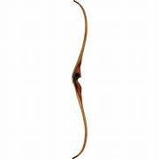
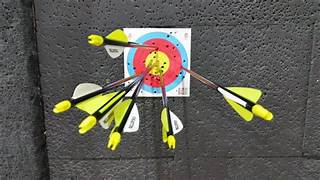
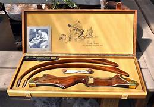

Boogschieten is geschikt voor jeugd en volwassenen. Het draait om rust, concentratie, houding en herhaling. De vereniging heeft een eigen boogbaan en materiaal waarmee beginners op een veilige manier kunnen kennismaken.



Jeugdleden van 8 tot 16 jaar schieten op vrijdagavond vanaf 19.30 uur onder begeleiding. Volwassenen schieten daarna vanaf 20.30 uur. Op maandagavond tussen 20.00 en 22.00 uur is het schieten uitsluitend voor volwassenen 16+.
Wil je weten of deze discipline bij jou past? Kom kennismaken of stel je vraag via de contactpagina. De vereniging denkt graag mee over een passende eerste stap.
Je hoeft niet direct eigen materiaal te hebben. De vereniging kan je helpen met passend materiaal en uitleg.
Er worden regelmatig wedstrijden geschoten. Bij boogschieten gaat dit vaak om 3D-parcours en techniektraining.
Ook kinderfeestjes, familieactiviteiten en bedrijfsactiviteiten zijn in overleg mogelijk.
Bij de schietsport gelden regels voor leeftijd, begeleiding, legitimatie en toelating. Neem vooraf contact op zodat de vereniging kan uitleggen wat voor jouw situatie mogelijk is.